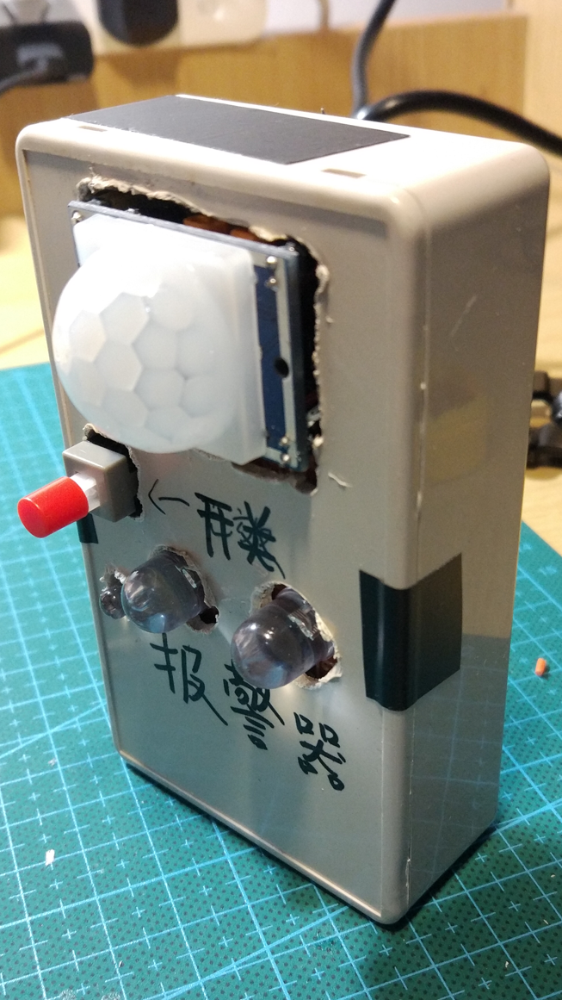
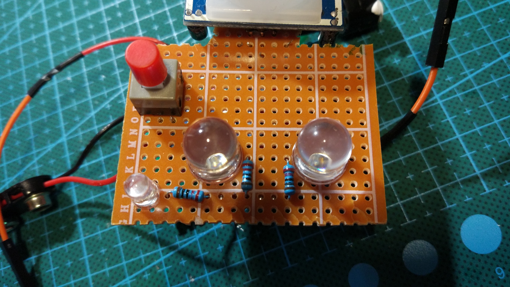
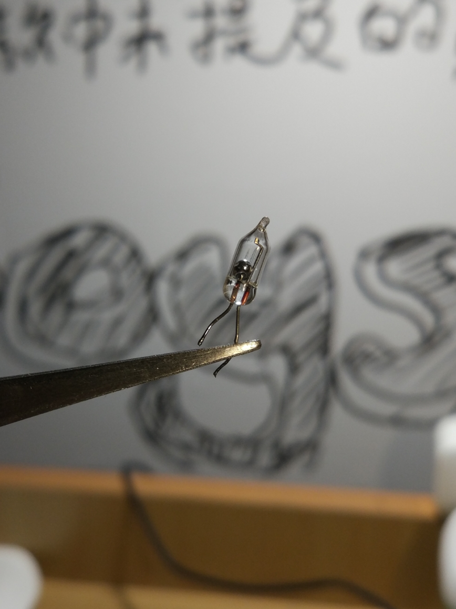
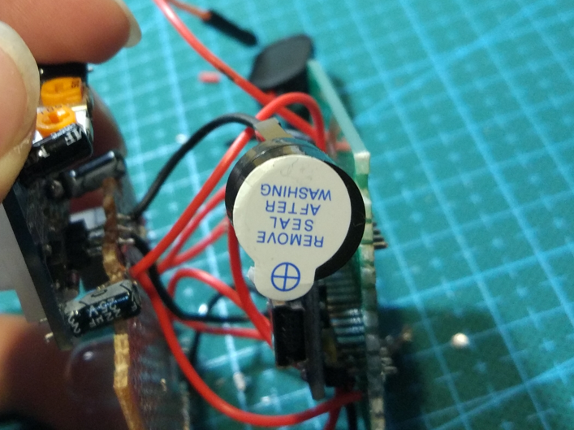
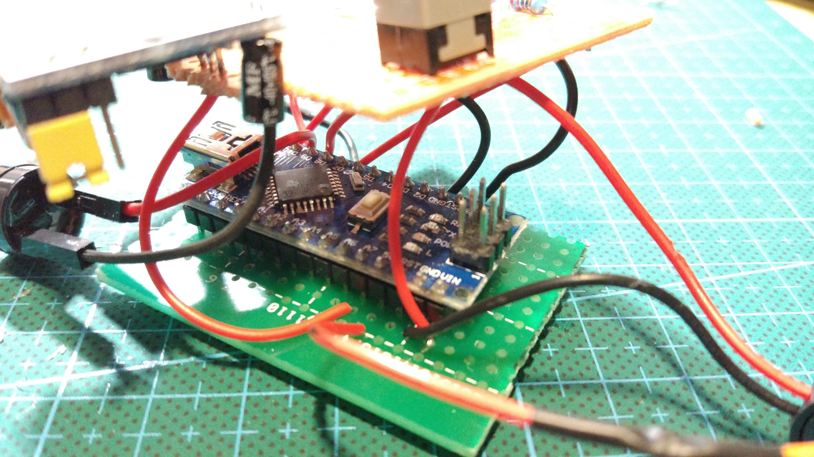
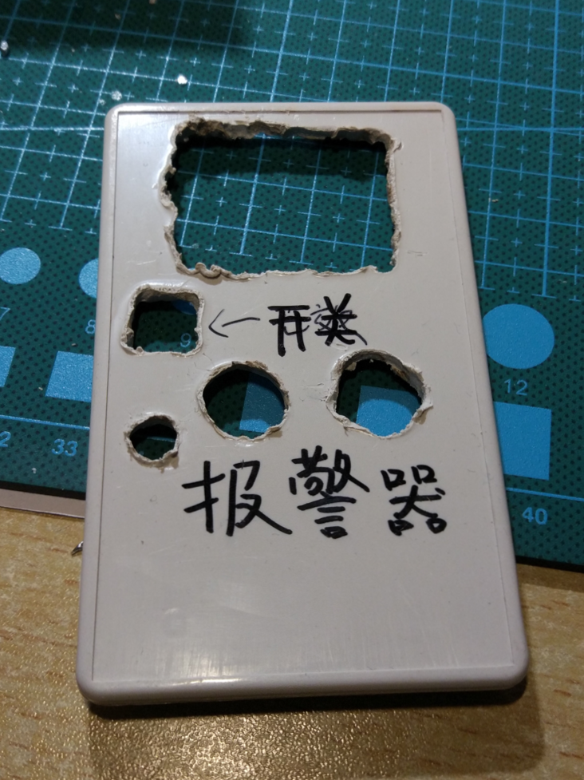

报警器模型
hhh作品被选到校奖了！开心！
从想法到完成作品，一共花了近二十天的时间。这是我打算用来参加学校“星火杯”比赛的作品，也是我第一个真正意义上的作品。以往都是买套件，买回来之后只需要按照介绍，一个一个元件焊接好就行了。这一次则有所不同，主要体现在全部由我构思设计，包括硬件和软件。当然，我也购买了一些模块化配件，这也是因为我的知识水平不够，无法自己实现相应功能。
这套报警器基于arduino平台，利用人体热释电红外探测器识别移动的人体，从而达到防盗报警的效果。为什么叫做模型呢，还不是因为蜂鸣器的声音太小了，有时候根本听不到啊，所以只是用来展示原理。
至于为什么要做这个东西，我的想法也是来源于现实生活。我们大学宿舍的结构有些奇特，一间大室里有两间小室和一个客厅。大门在客厅，每次我们都要经过客厅才能进入自己住的小室。这里就存在一个问题，当有人偷偷从大门进入客厅时，小室里的我们是难以感知到的。曾经就有陌生人进入客厅，留下了一大堆传单。更有人趁我们午睡时进入小室中发广告。如果进来的人是小偷，后果也将不堪设想。虽说随时锁门就能避免这一切的发生，但总有忘记的时候。这时报警器就派上用场了，它能在有人进入探测范围时发出警告。一来可以提醒我们，同时还可以震慑闯入者。
其他元件包括led灯，电阻，蜂鸣器和开关，结构极其简单。其中220欧姆电阻与led灯串联，防止灯泡烧坏。制作过程中还有一个小插曲。我曾打算使用一个水银开关来控制电路的运行，这样就可以做到翻面即可开启的效果。然而做好之后才发现，水银开关过于敏感，轻微的震动就会导致电路重置，于是就放弃了。
焊洞洞板真的是超级难受。因为要把led和探测器等东西露在盒子外面，arduino核心就没有地方放了。为了避免将核心放在背面，我又剪了一块洞洞板专门用来插核心，顺便供电。这样一来就要连接许多飞线。因为空间狭小，焊起来就十分憋屈。
其实制作外壳才是所有工作中最难的。为了在外壳上开孔，没有钻孔工具的我只好用电烙铁来烧。做的时候整个寝室就是一股浓郁的塑料燃烧的味道。这种体验真的不要再来第二次（挥手)。







最后贴上程序代码：